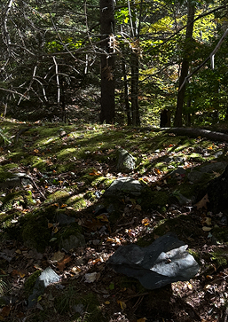
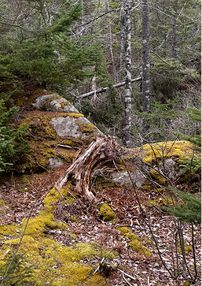
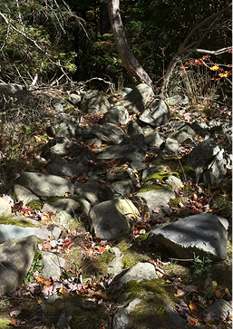
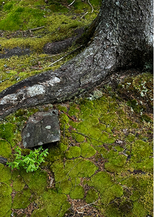

Background
In seemingly still corners, moss quietly grows.
It thrives not in sunlight, but in shade—rooting, spreading,
Soft yet persistent, veiling the traces of time.
This exhibition seeks to capture such hidden presence—
In the glow and the gaps, we trace the subtle spread of life.
Soft yet persistent, veiling the traces of time.
This exhibition seeks to capture such hidden presence—
In the glow and the gaps, we trace the subtle spread of life.